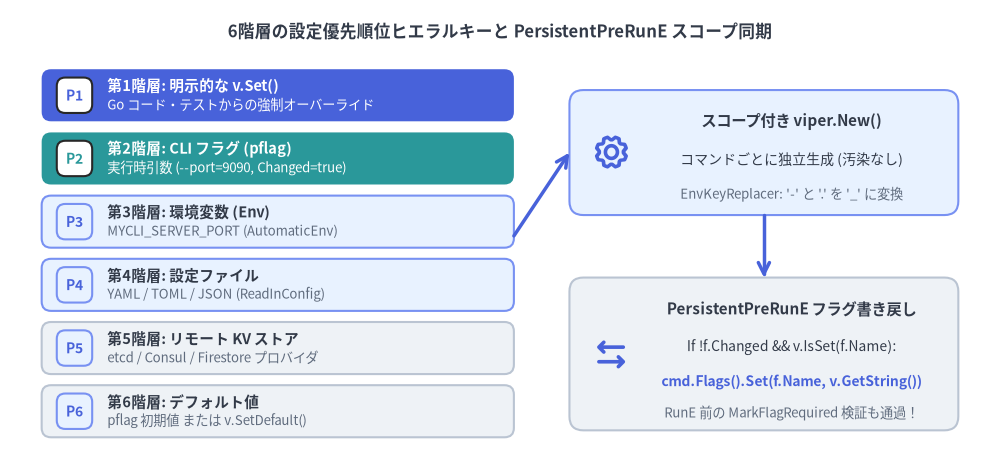
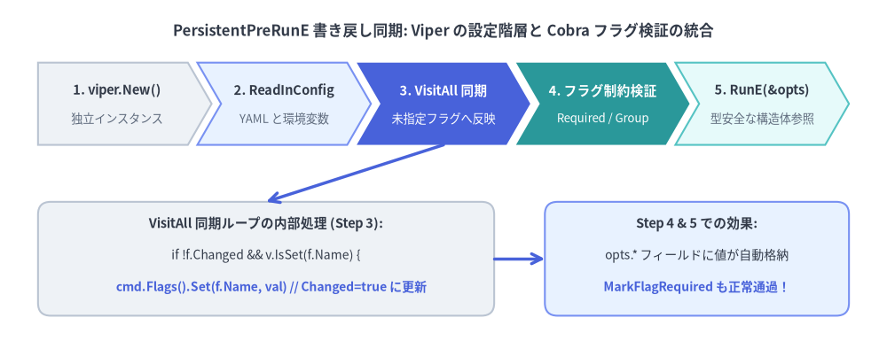

6階層の設定優先順位と Viper バインド
クラウドネイティブな CLI ツール（Twelve-Factor CLI）では、コマンドラインフラグ・環境変数・設定ファイル（.mycli.yaml）・リモート KV ストア・デフォルト値という複数の設定ソースを同時に扱う必要があります。Cobra は spf13/viper と組み合わせて設計されていますが、init() 関数内でグローバルな viper シングルトンに直接フラグをバインドする従来の書き方は、サブコマンド間のフラグ名衝突や並列テスト時の競合状態（データレース）を引き起こす最大の原因となります。

Source Code
from drawlib.canvas import save, setup
from drawlib.icons import phosphor
from drawlib.lines import line
from drawlib.shapes import rectangle
from drawlib.smartarts import CardList
from drawlib.styles import Styles
from drawlib.text import text
setup(width=144, height=68)
text(
(72, 63.5),
"6階層の設定優先順位ヒエラルキーと PersistentPreRunE スコープ同期",
style=Styles.DarkBold.patch(text_size=12.0),
)
# Left: 6-tier precedence stack using CardList
tiers = CardList(
style=Styles.Neutral,
text_style=Styles.DarkBold.patch(text_size=10.5),
description_style=Styles.Muted.patch(text_size=9.5),
badge_shape="rounded_rect",
badge_style=Styles.PrimaryNeutral,
badge_text_style=Styles.PrimaryBold.patch(text_size=10.0),
direction="vertical",
spacing=1.6,
)
tiers.add(
"第1階層: 明示的な v.Set()",
"Go コード・テストからの強制オーバーライド",
badge_text="P1",
style=Styles.PrimaryFlat,
text_style=Styles.WhiteBold.patch(text_size=10.5),
description_style=Styles.White.patch(text_size=9.5),
badge_style=Styles.White,
badge_text_style=Styles.PrimaryBold.patch(text_size=10.0),
)
tiers.add(
"第2階層: CLI フラグ (pflag)",
"実行時引数 (--port=9090, Changed=true)",
badge_text="P2",
style=Styles.SecondaryFlat,
text_style=Styles.WhiteBold.patch(text_size=10.5),
description_style=Styles.White.patch(text_size=9.5),
badge_style=Styles.White,
badge_text_style=Styles.SecondaryBold.patch(text_size=10.0),
)
tiers.add("第3階層: 環境変数 (Env)", "MYCLI_SERVER_PORT (AutomaticEnv)", badge_text="P3", style=Styles.PrimaryNeutral)
tiers.add("第4階層: 設定ファイル", "YAML / TOML / JSON (ReadInConfig)", badge_text="P4", style=Styles.PrimaryNeutral)
tiers.add("第5階層: リモート KV ストア", "etcd / Consul / Firestore プロバイダ", badge_text="P5", style=Styles.Neutral)
tiers.add("第6階層: デフォルト値", "pflag 初期値 または v.SetDefault()", badge_text="P6", style=Styles.Neutral)
tiers.draw(xy=(6, 5), width=68, height=53)
# Right: Scoped PersistentPreRunE Sync Architecture
rectangle((110, 46), width=56, height=18, style=Styles.PrimaryNeutral.patch(shape_r=2.0))
phosphor.gear((88, 46), width=5.5, style=Styles.PrimaryBold)
text((114, 50.5), "スコープ付き viper.New()", style=Styles.DarkBold.patch(text_size=11.0))
text((114, 45.0), "コマンドごとに独立生成 (汚染なし)", style=Styles.Dark.patch(text_size=10.0))
text((114, 40.0), "EnvKeyReplacer: '-' と '.' を '_' に変換", style=Styles.Muted.patch(text_size=9.5))
rectangle((110, 17), width=56, height=22, style=Styles.Neutral.patch(shape_r=2.0))
phosphor.arrows_left_right((88, 17), width=5.5, style=Styles.PrimaryBold)
text((114, 23.5), "PersistentPreRunE フラグ書き戻し", style=Styles.DarkBold.patch(text_size=11.0))
text((114, 18.0), "If !f.Changed && v.IsSet(f.Name):", style=Styles.Dark.patch(text_size=10.0))
text((114, 13.0), "cmd.Flags().Set(f.Name, v.GetString())", style=Styles.PrimaryBold.patch(text_size=10.0))
text((114, 8.5), "RunE 前の MarkFlagRequired 検証も通過！", style=Styles.Muted.patch(text_size=9.5))
line((74, 34), (82, 46), arrow_head="->", style=Styles.PrimaryBold)
line((110, 37), (110, 28), arrow_head="->", style=Styles.PrimaryBold)
save()
1. 6階層の設定優先順位ヒエラルキー
Viper が任意の設定キーを解決する際、以下の6つのレイヤーを上から順番に評価し、最初に見つかった値を採用します。
| 優先順位 | 設定ソース階層 | API / メカニズム | 優先される条件 |
|---|---|---|---|
| 1（最高） | 明示的な Set 呼び出し |
v.Set("server.port", 8080) |
外部入力に関わらず常に最優先（単体テストや強制上書き用）。 |
| 2 | CLI フラグ（pflag） |
--server-port 8080（f.Changed == true） |
ユーザーがコマンドライン上で明示的にフラグを指定した場合に優先。 |
| 3 | 環境変数（Env） | v.AutomaticEnv() + v.SetEnvPrefix("MYCLI") |
CLI フラグが未指定（Changed == false）の場合に設定ファイルより優先。 |
| 4 | 設定ファイル | v.ReadInConfig()（.yaml, .toml, .json） |
CLI フラグも環境変数も指定されていない場合に採用。 |
| 5 | リモート KV ストア | v.AddRemoteProvider("etcd3", ...) |
ローカルファイル・環境変数・CLI フラグのいずれも未指定の場合に採用。 |
| 6（最低） | デフォルト値 | pflag の初期値 または v.SetDefault(...) |
上位5つのどの階層でも値が設定されていない場合のフォールバック。 |
最重要ポイント：pflag.Changed が第2階層と第3〜6階層を分ける
pflag.Flag は必ずデフォルト値（例：--port の初期値 8080）を持っています。では、Viper はその 8080 が「ユーザーが明示的に --port 8080 と入力した値（第2階層）」なのか「単なるデフォルト値（第6階層）」なのかをどう区別しているのでしょうか？
- Viper は
flag.Changedブール値を参照します。 flag.Changed == trueのときのみ第2階層（CLI フラグ）として扱われます。flag.Changed == falseの場合、Viper は第3階層（環境変数）→ 第4階層（設定ファイル）→ 第5階層（リモート KV）の順に探し、どこにも無ければ第6階層（デフォルト値）を返します。
2. なぜグローバル viper ＋ init() バインドは破綻するのか
古いサンプルコードでは、パッケージ初期化関数 init() の中でグローバルな viper シングルトンにフラグをバインドする例がよく見られます。
// アンチパターン: init() 内でグローバル viper にバインドしてはいけない！
func init() {
rootCmd.PersistentFlags().StringVar(&cfgFile, "output", "table", "Output format")
_ = viper.BindPFlag("output", rootCmd.PersistentFlags().Lookup("output"))
}
この実装には3つの重大な欠陥があります。
- サブコマンド間の同名フラグ衝突（シャドーイング）:
cmdAとcmdBの両方がローカルフラグ--timeoutを持ち、それぞれのinit()でviper.BindPFlag("timeout", ...)を呼ぶと、後から実行されたcmdBのinit()がグローバル Viper の"timeout"バインドを上書きしてしまいます。結果としてcmdA --timeout 30sを実行しても、未解析であるcmdB側のフラグ（Changed == false）が参照され、CLI 引数が無視されます。 - 並列テスト（
t.Parallel()）での状態汚染: グローバルなviperインスタンスはプロセス全体で共有されるため、あるテストで読み込んだ設定ファイルや環境変数が他のテストケースへ漏洩します。 - 構造体ポインタ（
StringVar）と必須フラグ検証（MarkFlagRequired）の不整合:cmd.Flags().StringVar(&opts.Token, "token", "", ...)で構造体フィールドをバインドし、さらにcmd.MarkFlagRequired("token")を設定した場合、環境変数MYCLI_TOKENを設定してもopts.Tokenには値が入らず、flag.Changedもfalseのままです。その結果、ValidateRequiredFlags()がrequired flag(s) "token" not setエラーで失敗してしまいます。
3. 実践パターン：スコープ付き viper.New() と PersistentPreRunE 書き戻し同期
グローバル汚染を防ぎつつ、StringVar 構造体バインドと MarkFlagRequired / flag_groups.go の両方を環境変数・設定ファイルと完全連動させるには、PersistentPreRunE 内でスコープ付き viper.New() を生成し、解決済みの値を cmd.Flags().Set(...) で pflag 側へ書き戻す（Back-Sync）パターンを採用します。

Source Code
from drawlib.canvas import save, setup
from drawlib.lines import line
from drawlib.shapes import rectangle
from drawlib.smartarts import ChevronProcess
from drawlib.styles import Styles
from drawlib.text import text
setup(width=140, height=54)
text(
(70, 49),
"PersistentPreRunE 書き戻し同期: Viper の設定階層と Cobra フラグ検証の統合",
style=Styles.DarkBold.patch(text_size=12.0),
)
steps = ChevronProcess(
style=Styles.Neutral,
text_style=Styles.DarkBold.patch(text_size=10.5),
description_style=Styles.Muted.patch(text_size=9.5),
corner_angle=60.0,
spacing=1.5,
flat_left_end=True,
)
steps.add("1. viper.New()", description="独立インスタンス")
steps.add("2. ReadInConfig", description="YAML と環境変数", style=Styles.PrimaryNeutral)
steps.add(
"3. VisitAll 同期",
description="未指定フラグへ反映",
style=Styles.PrimaryFlat,
text_style=Styles.WhiteBold.patch(text_size=10.5),
description_style=Styles.White.patch(text_size=9.5),
)
steps.add(
"4. フラグ制約検証",
description="Required / Group",
style=Styles.SecondaryFlat,
text_style=Styles.WhiteBold.patch(text_size=10.5),
description_style=Styles.White.patch(text_size=9.5),
)
steps.add("5. RunE(&opts)", description="型安全な構造体参照", style=Styles.SecondaryNeutral)
steps.draw(xy=(6, 31), width=128, height=13)
rectangle((42, 13), width=72, height=18, style=Styles.Neutral.patch(shape_r=2.0))
text((42, 18.5), "VisitAll 同期ループの内部処理 (Step 3):", style=Styles.DarkBold.patch(text_size=10.5))
text((42, 13.5), "if !f.Changed && v.IsSet(f.Name) {", style=Styles.Dark.patch(text_size=10.0))
text((42, 8.5), " cmd.Flags().Set(f.Name, val) // Changed=true に更新", style=Styles.PrimaryBold.patch(text_size=10.0))
rectangle((110, 13), width=48, height=18, style=Styles.PrimaryNeutral.patch(shape_r=2.0))
text((110, 18.5), "Step 4 & 5 での効果:", style=Styles.DarkBold.patch(text_size=10.5))
text((110, 13.5), "opts.* フィールドに値が自動格納", style=Styles.Dark.patch(text_size=10.0))
text((110, 8.5), "MarkFlagRequired も正常通過！", style=Styles.PrimaryBold.patch(text_size=10.0))
line((70, 31), (42, 22), arrow_head="->", style=Styles.PrimaryBold)
line((78, 13), (86, 13), arrow_head="->", style=Styles.PrimaryBold)
save()
完全な実装コード（cmd/mycli/config.go）
package cli
import (
"errors"
"fmt"
"strings"
"github.com/spf13/cobra"
"github.com/spf13/pflag"
"github.com/spf13/viper"
)
type DeployOptions struct {
ConfigFile string
ServerURL string
APIToken string
Replicas int
}
func NewRootCommand() *cobra.Command {
opts := &DeployOptions{}
cmd := &cobra.Command{
Use: "mycli",
Short: "6階層の設定優先順位を備えたワークロードデプロイ CLI",
PersistentPreRunE: func(cmd *cobra.Command, args []string) error {
return initializeConfig(cmd, opts.ConfigFile)
},
RunE: func(cmd *cobra.Command, args []string) error {
// opts の各フィールドには CLI フラグ > 環境変数 (MYCLI_*) > 設定ファイル > デフォルト値
// の優先順位で解決された型安全な値が自動的に格納されている
cmd.Printf("Connecting to %s (replicas=%d)\n", opts.ServerURL, opts.Replicas)
return nil
},
}
pf := cmd.PersistentFlags()
pf.StringVar(&opts.ConfigFile, "config", "", "設定ファイルのパス（デフォルトは .mycli.yaml）")
f := cmd.Flags()
f.StringVar(&opts.ServerURL, "server-url", "https://api.example.com", "接続先 API サーバー URL")
f.StringVar(&opts.APIToken, "api-token", "", "認証用 Bearer トークン（必須）")
f.IntVar(&opts.Replicas, "replicas", 3, "ワークロードのレプリカ数")
// --api-token を必須化（CLI フラグ、環境変数 MYCLI_API_TOKEN、設定ファイルのどれでも満たせる！）
_ = cmd.MarkFlagRequired("api-token")
return cmd
}
func initializeConfig(cmd *cobra.Command, cfgFile string) error {
// 1. スコープ付きの独立した Viper インスタンスを生成（グローバル viper は使わない）
v := viper.New()
// 2. 設定ファイルの探索と読み込み（第4階層）
if cfgFile != "" {
v.SetConfigFile(cfgFile)
} else {
v.SetConfigName(".mycli")
v.SetConfigType("yaml")
v.AddConfigPath(".")
v.AddConfigPath("$HOME")
}
if err := v.ReadInConfig(); err != nil {
var notFoundErr viper.ConfigFileNotFoundError
if !errors.As(err, ¬FoundErr) {
return fmt.Errorf("failed to read config file: %w", err)
}
}
// 3. 環境変数の自動バインド設定（第3階層）
// フラグ名 --server-url のハイフンをアンダースコアへ変換し MYCLI_SERVER_URL にマッピング
v.SetEnvPrefix("MYCLI")
v.SetEnvKeyReplacer(strings.NewReplacer("-", "_", ".", "_"))
v.AutomaticEnv()
// 4. 実行対象コマンドの FlagSet を走査し、未指定フラグへ Viper の解決値を書き戻す
var syncErr error
cmd.Flags().VisitAll(func(f *pflag.Flag) {
// CLI 上でフラグが明示指定されておらず (!f.Changed)、かつ Viper 側（環境変数や設定ファイル）
// に値が存在する場合、cmd.Flags().Set() で pflag 側へ反映する
if !f.Changed && v.IsSet(f.Name) {
val := fmt.Sprintf("%v", v.Get(f.Name))
if err := cmd.Flags().Set(f.Name, val); err != nil && syncErr == nil {
syncErr = fmt.Errorf("invalid config value for %q: %w", f.Name, err)
}
}
})
return syncErr
}
VisitAll 書き戻しパターンが優れている3つの理由
RunE内の単一情報源（Single Source of Truth）: コマンド本体（RunE）はopts.ServerURLやopts.Replicasといった型付きの Go 構造体フィールドを読むだけで済み、viperパッケージに一切依存しません。pflag.Value.Setによる厳密な型検証:cmd.Flags().Set(f.Name, val)を通すことで、int・time.Duration・net.IP・カスタムpflag.Valueなどのパーサーがそのまま実行され、環境変数や YAML ファイル内の型ミスを実行前に検出できます。MarkFlagRequiredおよびフラググループ制約との完全な互換性:PersistentPreRunEはValidateRequiredFlags()やValidateFlagGroups()の前に実行されるため（command.go:985-1012）、cmd.Flags().Set(...)によってf.Changed = trueがセットされると、必須フラグ制約やMarkFlagsRequiredTogetherが環境変数・設定ファイル経由でもそのまま機能します。